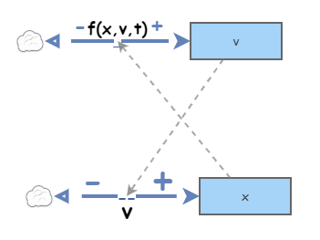
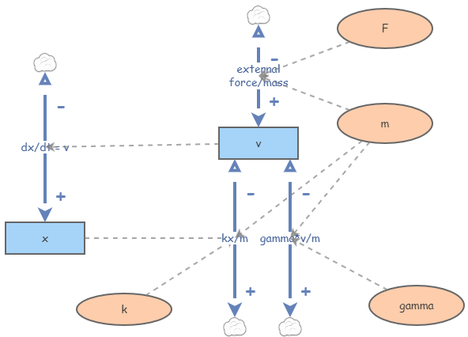

Introduce the basic diagram for second order differential equations.
Explore the basic harmonic oscillator (damped or not, forced or not).
Consider a driven nonlinear pendulum as an example that is not solvable by analytic methods.
Second-order ODEs are ones of the form
\begin{equation*}
x'' = f(x,x',t)
\end{equation*}
To handle these equations numerically, we must convert such ODEs to a system of first-order ODEs. We do this by introducting the variable \(v = x'\text{.}\) We use the letter \(v\) because we are now thinking of \(x\) as a position and \(x'\) as a velocity. This yields the system of first order ODEs
The basic Insightmaker diagram for a second order equation becomes the following:

Figure3.3.1.The general second order equation diagram. This construction can be generalized to any higher-order equation by introducing more intermediate stocks for the derivatives.
We will now explore an important class of examples inwhich it makes sense to break the single flow into \(v\) into multiple branches.
Subsection3.3.1Harmonic Oscillators
Definition3.3.2.
A simple harmonic oscillator is a spring-mass system in which the magnitude of the restoring force of the spring is proportional to the dispalcement of the mass. Given the mass \(m\) and spring constant \(k\text{,}\) the position \(x\) of the mass satisfies the second-order ODE
\begin{equation*}
mx'' = -kx
\end{equation*}
or equivalently
\begin{equation*}
mx''+kx = 0.
\end{equation*}
A damped harmonic oscillator has an additional damping term, where the damping is assumed to be proportional to the velocity. Using \(\gamma\) as the damping coefficient, we have
Note that in spring-mass systems we have \(m\text{,}\)\(k\text{,}\) and \(\gamma\) positive.
We now explore the behavior of oscillators in various cases with Insightmaker. The Insight used for these is available at Harmonic Oscillator Insight. The diagram is given by

Figure3.3.3.The damped and forced oscillator.
Exploration1.No External Force.
Analytic methods can be used to show the three possible cases. In each case we show the result with \(x(0) = 1\) and \(v(0) = 0\text{.}\)
Overdamped: This occurs when \(\gamma^2 - 4mk > 0\text{.}\) In this case we see \(x\) and \(v\) decay to zero rapidly. Using \(\gamma = 3\text{,}\)\(m = 1\text{,}\) and \(k=1\text{,}\) we obtain the following:
Underdamped: This occurs when \(\gamma^2 - 4mk \lt 0\text{.}\) In this case we see \(x\) and \(v\) oscillate with amplitude decaying to zero. Using \(\gamma = 1\text{,}\)\(m = 1\text{,}\) and \(k=3\text{,}\) we obtain the following:
In the scatterplot with \(x\) and \(v\) on the horizontal and vertical axes, respectively, we see a spiral:
Underdamped: This occurs when \(\gamma^2 - 4mk = 0\text{.}\) In this case we see \(x\) and \(v\) decaying to zero with an "almost" oscillation at the start. Using \(\gamma = 2\text{,}\)\(m = 1\text{,}\) and \(k=1\text{,}\) we obtain the following:
In the scatterplot with \(x\) and \(v\) on the horizontal and vertical axes, respectively, we see an "almost" spiral:
Notice that all solution other than when \(\gamma = 0\) will approach zero in the long run. This should make sense as positive damping should slow our mass down.
Exploration2.Periodic Forcing without Damping.
Now we explore the effect of a periodic force of the form \(F(t) = \sin(\omega t) \) to an undamped (\(\gamma = 0\)) oscillator with \(k=1\) and \(m=1\) (the more general case is treated in any standard differential equations text), i.e.
\begin{equation*}
x'' + x = F(t).
\end{equation*}
When \(F(t) = 0\) (\(\omega = 0\)) the oscillator oscillates sinusoidally with period \(2\pi\text{.}\) Because an external force will put the mass into motion, we can let \(x(0)=0\) and \(v(0) = 0\text{.}\)
Non-resonant Forcing: This is when the period of the unforced oscillation is not equal to the period of the forcing function.
Resonant Forcing: This is when the period of the forcing function and the unforced oscillation are equal, i.e. \(\omega = 2\pi\text{.}\)
We will explore the resonant case with Insightmaker. While this is treated analytically in standard texts, we can gain more intuition via simulation. The Insight we will use is at Resonance Insight.
We first will simulate with a forcing function (as an Insightmaker variable) called \(One\ Period\ Force\text{,}\) which is given by the algebraic formula
Running this simulation and increasing \(n\) by one repeatedly, we obtain the following sequence of time series graphs. Notice that the oscillator remains motionless until the force is "turned on" and then oscillates freely after the force is "turned off". Because the second-order ODE we are working with is linear, the response to the sum of forces is equal to the sum of the forced responses (be sure that line makes sense). Because the force over multiple periods is the sum of these shifts of single period forces, we simply sum the graphs to the right (ad-infinitum) to obtain the response to a full sinusoid.
we see the linear growth in amplitude. To see this best, we use the Compare Results function under the Tools menu in Insightmaker. Comparing graphs for \(n = 1,\ldots, 8\text{,}\) we obtain the following:
Figure3.3.4.Linear growth in amplitude illustated as we apply the periodic force over more periods. The perfect alignment between forcing function and response is key to growth in amplitude. This way the shifted responses (shifted by the period of the forcing function) line up perfectly so that they are vertical stretches of one another. You are encouraged to experiment with the non-resonant case and see how that works out.
Checkpoint3.3.5.
What are the possible outcomes of applying a periodic force to a damped oscillator? Consider all possible cases of damping and think about how the results make physical sense.
The oscillator problems presented in this section are rather standard in a first course in differential equations. They are amenable to analytic methods. However, we should keep in mind that Insightmaker doesn’t care if an ODE is linear or not. For instance, one may explore the behavior of a non-linear air spring using Insightmaker using essentially the same diagram we used above but with different flow formulas. Using the programming functions in the flow formulas, one may use different damping coefficients depending position and/or on the sign of the velocity. Linear constant coefficient oscillators are just the beginning.